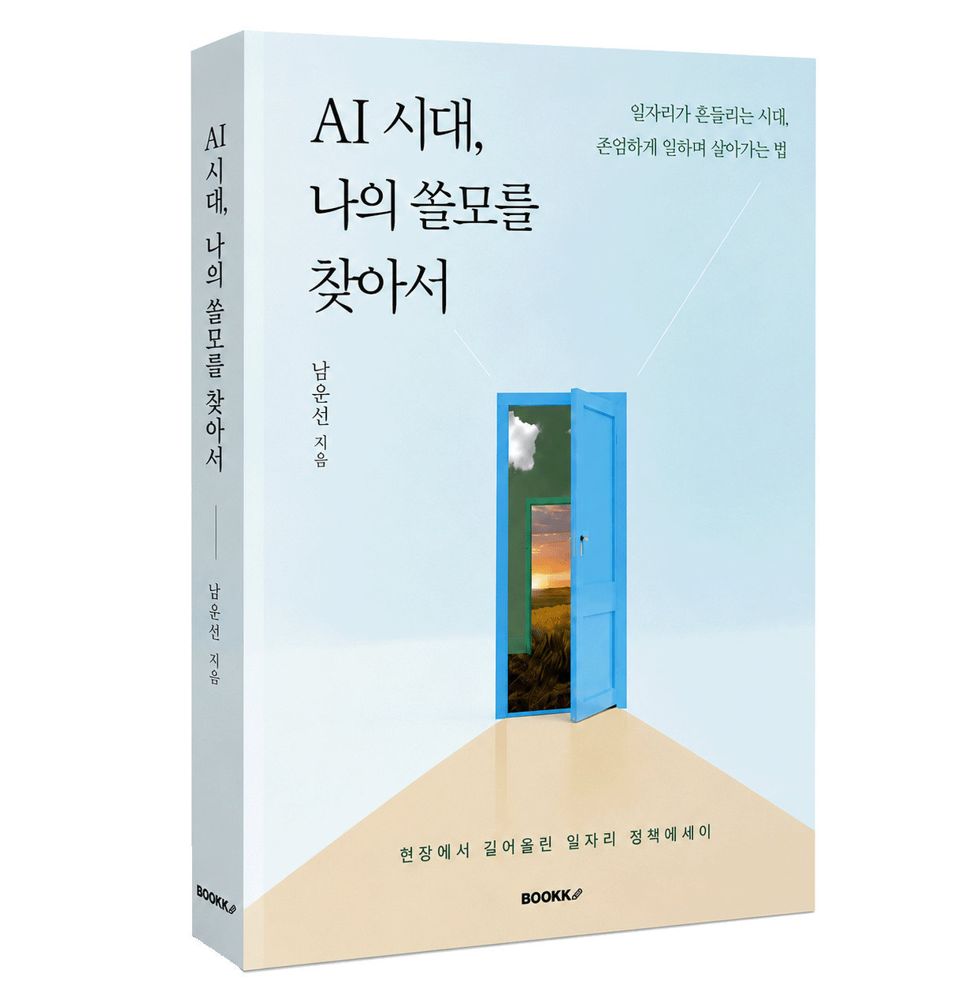

강의 사진
01강의 제목
기관명 · 날짜
짧은 설명을 추가합니다.MINSANG RESEARCH INSTITUTE · SSULMO
일자리 정책 × AI × 중장년의 새로운 기회
ABOUT
『AI 시대, 나의 쓸모를 찾아서』 저자
前 경기도일자리재단 북부사업본부장
前 경기도의원
2026년 전국민 AI 경진대회 우수상 수상
LECTURE
현장과 사람을 잇는 강의와 대화를 만듭니다.
기관명 · 날짜
짧은 설명을 추가합니다.기관명 · 날짜
짧은 설명을 추가합니다.기관명 · 날짜
짧은 설명을 추가합니다.기관명 · 날짜
짧은 설명을 추가합니다.RESEARCH
일자리·AI·중장년·경기북부를 중심으로 생각을 쌓아갑니다.
직업의 변화보다 먼저 살펴야 할 ‘일의 조각’과 사람의 새로운 쓸모에 대한 기록입니다.
↗중장년의 경험이 AI 시대에 어떻게 다시 연결될 수 있는지 질문합니다.
↗경기북부의 구체적인 삶에서 정책의 언어를 다시 시작하는 방법을 생각합니다.
↗앞으로 정책 아이디어와 칼럼이 이곳에 추가됩니다.
BOOK

변화의 시대, 일의 의미를 다시 묻고 나만의 가능성을 발견하는 안내서
26pAI는 직업을 통째로 삼키기보다 그 안의 일을 잘게 조각내어 하나씩 가져가고 있다.
마치 아무도 모르는 사이 수면 아래에서 조금씩 녹아내리는 빙산처럼.
31p우리가 해야 할 일은 안전한 직종을 찾아가는 것이 아니다.
(중략) 내가 세상에 쓸모 있는 존재라는 확신을 잃지 않는 것,
변화에 맞추어 자기만의 쓸모를 계속 키워가는 일이다.
35p“정말 오랜만에 실컷 울었어요.
내가 다시 무언가를 할 수 있을까에 대해 늘 의심했었는데,
이제는 용기가 좀 생기네요.”
67p어쩌면 자신을 필요로 하는 사람을 만날 수 있도록 돕는 것이야말로
최고의 복지가 아닐까.
106p사회가 부담한다는 것은 결국 ‘나도 비용을 부담할 결심’을 한다는 뜻이다.
세금이든 보험료든 서비스 비용이든,
더 나은 노동조건을 만드는 책임에서 나만 빠질 수는 없다.
117p당신도 당신의 삶 속에서 오래 마음에 남아 있던 장면과 질문을 다시 꺼내보기를 바란다.
(중략) 어쩌면 아직 발견하지 못한 당신만의 목소리와 쓸모가
숨어 있을지도 모른다.
YOUTUBE
AI와 함께 살아가는 방법을 쉽고 구체적으로 이야기합니다.
 남운선의 북콘서트 | AI 시대, 나의 쓸모를 찾아서
남운선의 북콘서트 | AI 시대, 나의 쓸모를 찾아서 AI와 함께 살기 제3탄｜AI로 만드는 ‘나만의 앱’
AI와 함께 살기 제3탄｜AI로 만드는 ‘나만의 앱’ AI와 함께 살기 제2탄｜바이브코딩으로 쉽게 하는 영어공부
AI와 함께 살기 제2탄｜바이브코딩으로 쉽게 하는 영어공부 AI와 함께 살기 제1탄 | 매일 아침, AI가 뉴스를 정리해 준다면?
AI와 함께 살기 제1탄 | 매일 아침, AI가 뉴스를 정리해 준다면?